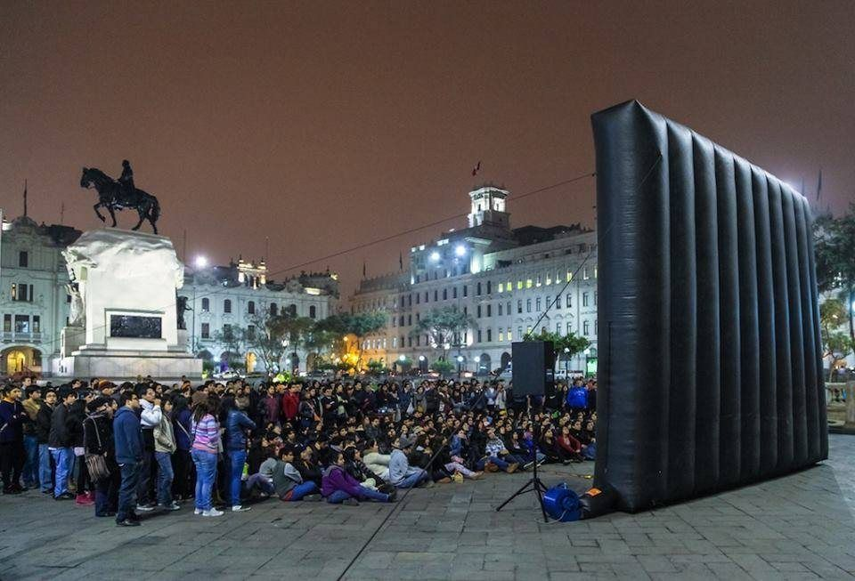

Participativo
Reconocemos a las comunidades como agentes activos de conocimiento y creación: ellas cuentan sus propias historias.
Desde 2013, La Combi · arte rodante se mueve para compartir espacios de creación, formación y encuentro que, desde y hacia la comunidad, proponen el cine y el audiovisual como herramienta para conectar la diversidad de culturas, voces y realidades que nos rodean.

A lo largo de estos años hemos desarrollado proyectos principalmente en América Latina, caminando junto a comunidades diversas y territorios vivos. Hoy tenemos sedes en España y en Perú, lo que nos permite tender puentes entre ambos territorios y seguir moviendo historias de un lado a otro.
Creemos en el cine, el audiovisual y las nuevas tecnologías como lenguajes cercanos que nos unen y nos permiten abrir caminos para imaginar, juntas y juntos, otros mundos posibles.

Reconocemos a las comunidades como agentes activos de conocimiento y creación: ellas cuentan sus propias historias.
Nos adaptamos a cada territorio, rural o urbano, y a cada grupo, con herramientas artísticas, educativas y digitales.
Fortalecemos capacidades locales y promovemos la cohesión social, la igualdad y el diálogo intercultural.
Espacios seguros de expresión, autoestima individual y colectiva, memorias y saberes recuperados y redes comunitarias que perduran.
Nuestro impacto se ve en las películas, pero sobre todo en los procesos. Una metodología alineada con los Objetivos de Desarrollo Sostenible, para impulsar transformaciones sociales duraderas desde la cultura y la participación ciudadana.